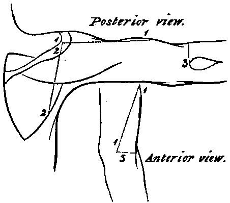

A Dissection To Expose The Musculo-Spiral Nerve
Description
This section is from the book "A Manual Of Dissections Of The Human Body", by R. E. Carrington. Also available from Amazon: A manual of dissections of the human body.
A Dissection To Expose The Musculo-Spiral Nerve
Position
The body lying upon its face, the arm extended at right angles to the trunk, and rotated inwards.
I. Skin Incisions
1. From the tip of the Acromion process down the outer border of the arm for about half its extent, and then forwards to the centre of the bend of the elbow half an inch below the external Condyle.
No. 11.
2. From the upper end of No. 1 downwards and backwards to the centre of the Axillary border of the Scapula.
3. From the lower end of No. 1, transversely outwards below the external Condyle to the Olecranon process.
Reflect the flap inwards and expose the superficial fascia and the following cutaneous structures—
1. Branches of the Posterior Circumflex artery, turning round the posterior border of the Deltoid muscle below the middle, and supplying the skin over it. An offset is also given to the integument over the Triceps muscle.
2. Twigs of the Superior Profunda artery in front of and behind the external Condyle.
3. In front of the elbow, the Median-cephalic vein joined below by the Radial; the Cephalic vein is also seen in the lower half of the arm.
4. The Supra-acromial branches of the Cervical plexus over the upper part of the Deltoid muscle.
5. Branches of the Circumflex nerve turning round the posterior border of the Deltoid at the lower part, and having a similar distribution to the Posterior Circumflex artery. Other branches of the nerve perforate the muscle.
6. The Intercosto-humeral nerve supplying the skin the upper half of the inner aspect of the arm; a few filaments passing over the posterior Axillary fold.
7. The posterior branch of the third Lateral Cutaneous nerve often reaches the upper part of the arm.
8. The Internal Cutaneous branch of the Musculo-spiral nerve passing back beneath the Intercosto-humeral and supplying the skin nearly as far as the Olecranon.
9. The superior External Cutaneous branch of the Musculo-spiral nerve lies with the Cephalic vein. The inferior External Cutaneous branch over the posterior aspect of the arm.
10. In front of the elbow beneath the Median-cephalic vein, the Musculo-cutaneous nerve.
11. The upper part of the Olecranon bursa.
II. Remove The Preceding And Expose The Fascia Lata
Above the elbow it will be found to form the external intermuscular septum. Clear it away except this process.
The following structures will be displayed—
1. The posterior portion of the Deltoid muscle.
2. The Latissimus dorsi muscle passing beneath it at the lower part, but separated by the long head of the Triceps muscle.
3. The Teres major muscle, taking a similar course to the Latissimus, but above it. 4. A small portion of the lower border of the Teres minor above the major muscle. It may, however, not come into view.
5. The long head of the Triceps muscle below the posterior border of the Deltoid and superficial to the Latissimus dorsi, and Teres major muscles. The outer head of the Triceps lower down the arm, and above the long head in the abducted position. Still lower, the outer portion of the inner head and the tendon.
6. In front of the elbow the outer border of the Biceps muscle, and beneath it the:
7. Brachialis anticus muscle.
8. Descending from the external Condyloid ridge the Supinator longus, and Extensor carpi radialis longior muscles.
9. Still lower down the upper part of the Anconeus muscle, behind and below the external Condyle. 10. Between the Brachialis anticus and Supinator longus muscles a further portion of the External Cutaneous nerve will be seen.
11. On pulling outwards the Supinator longus and Extensor carpi radial is longior muscles, the Musculo-spiral nerve may be seen perforating the external intermuscular septum, running down beneath them, and dividing at the level of the external Condyle into Radial and Posterior Interosseous branches. The offsets to these muscles and the Brachialis anticus may also be traced.
12. Running down with the Musculo-spiral nerve the anterior branch of the Superior Profunda artery will be seen inosculating below with the Radial Recurrent branch.
III
a. Hook the posterior border of the Deltoid muscle well forwards.
b. Cut through the long, and outer heads of the Triceps muscle.
c. Divide the Latissimus dorsi and Teres major muscles.
d. Divide the Supinator longus and Extensor carpi radialis longior muscles. There will now be exposed—
1. The head of the Humerus and the upper part of the shaft.
2. The Subscapularis muscle along the Axillary border of the Scapula.
3. The Teres minor muscle parallel with and behind the preceding.
4. Lower down at the elbow the Supinator brevis muscle.
5. Most of the second, and all the third part of the Axillary artery, and the commencement of the Brachial, in front of the Subscapulars and along the inner border of the arm.
6. The Subscapular branch, running down the Axillary border of the Scapula, crossing behind the Musculo-spiral nerve, and giving off its Dorsalis scapulæ branch below the Teres minor muscle, this branch then passes beneath the muscle.
7. The Posterior Circumflex artery is seen at its origin and in the rest of its course.
8. The origin and upper part of the Superior Profunda branch of the Brachial artery.
9. The Axillary vein, internal to and in front of its artery, the venæ comites of the Brachial artery, and veins corresponding to all the arterial branches above enumerated.
10. The Circumflex nerve is seen with the Posterior Circumflex artery.
11. The Musculo-spiral nerve above and below, and the origin of its Internal Cutaneous branch at its upper part.
12. Deep down in the dissection above, the Musculocutaneous nerve may be seen entering the Coraco-brachialis muscle and also the Ulnar nerve, but it is not necessary to find them, for the nerve in course of dissection is superficial to them in this position.
IV
a. Remove a portion of the lower border of the Sub-scapularis muscle near the Humerus. Then the bifurcation of the posterior cord of the Brachial plexus into the Circumflex and Musculo-spiral nerves can be seen. This division takes place internal to the Axillary border of the Scapula, and if necessary a portion of the bone may be chipped away; nevertheless this is not absolutely requisite.
b. Divide the Subscapular vessels.
c. Trace the Musculo-spiral nerve through the substance of that portion of the Triceps not yet divided, along the Musculo-spiral groove. In this situation the Superior Profunda artery will be found lying upon it, and must be removed. The upper part of the external intermuscular septum must also be taken away. The nerve and its offsets may now be completely traced to its bifurcation. The Internal branches, viz., to the inner and middle heads of the Triceps, the Ulnar Collateral, and the Internal Cutaneous. The Posterior branches, viz., to the outer head, and the Anconeus muscle; the latter a long slender offset passing through the substance of the muscle with a branch of the Superior Profunda artery. The External branches, viz., the two External Cutaneous, and to the Supinator longus and Extensor carpi radialis longior, may all be followed out; some of them, however, have been previously dissected. A branch to the Brachialis anticus muscle from the outer set may be sometimes traced.
Continue to:
- prev: A Dissection To Expose The Anterior And Posterior Circumflex Arteries
- Table of Contents
- next: A Dissection Of The Anastomoses About The Elbow-Joint